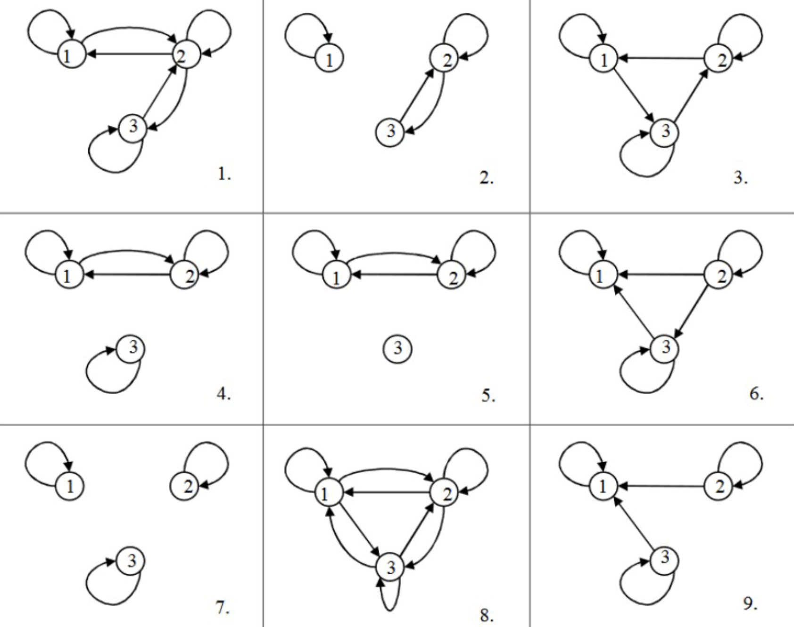

W10. Binary Relations, Order Relations, Equivalence Relations, Graph Theory
Zakhar Podyakov
2025-11-06
1. Summary
1.1 Introduction to Relations
A relation is a fundamental concept in mathematics that describes how elements from different sets are connected or associated with each other. Formally, any subset of a Cartesian product of sets is called a relation. If we have sets \(X_1, X_2, \ldots, X_n\), then any set \(R \subseteq X_1 \times X_2 \times \cdots \times X_n\) is a relation on these sets.
Relations can have different arities (number of elements involved). A unary relation (arity 1) describes a property of individual elements, like “x is positive” or “a person is a woman.” A binary relation (arity 2) connects pairs of elements, such as “x is less than y” or “person x is married to person y.” Higher-arity relations involve three or more elements, like “x + y = z” connecting three numbers.
1.1.1 Binary Relations
A binary relation\(R\) on sets \(X\) and \(Y\) is any subset \(R \subseteq X \times Y\). When \(X = Y\), we say \(R\) is a binary relation on\(X\) (rather than “between” two different sets). We write \((x, y) \in R\) or equivalently \(xRy\) to indicate that elements \(x\) and \(y\) are related.
For example, the relation “less than or equal to” on natural numbers \(\mathbb{N}\) is the set \(\leq = \{(x, y) \in \mathbb{N}^2 \mid x \leq y\}\). This is an infinite set containing pairs like \((1, 1), (1, 2), (1, 3), (2, 2), (2, 3), \ldots\).
1.2 Properties of Binary Relations
Binary relations can have various important properties that characterize their behavior. Understanding these properties is crucial for classifying relations and studying their applications.
1.2.1 Reflexivity and Irreflexivity
A relation \(R\) on set \(X\) is reflexive if every element is related to itself: \((\forall x \in X)(xRx)\). For example, “equals” (=) is reflexive because \(x = x\) for all \(x\). The relation “is less than or equal to” (\(\leq\)) is also reflexive.
Conversely, a relation is irreflexive (also called anti-reflexive) if no element is related to itself: \((\forall x \in X)\neg(xRx)\). The relation “less than” (<) is irreflexive because \(x < x\) is never true.
Important: A relation can be neither reflexive nor irreflexive. For instance, “person x likes person y” may hold for some people with themselves but not others.
1.2.2 Symmetry, Asymmetry, and Anti-symmetry
A relation \(R\) on set \(X\) is symmetric if whenever \(x\) is related to \(y\), then \(y\) is also related to \(x\): \((\forall x, y \in X)(xRy \to yRx)\). Examples include “equals” (if \(x = y\) then \(y = x\)) and “x + y = 0” (if \(x + y = 0\) then \(y + x = 0\)).
A relation is asymmetric if whenever \(x\) is related to \(y\), then \(y\) is NOT related to \(x\): \((\forall x, y \in X)(xRy \to \neg yRx)\). This is equivalent to saying \((\forall x, y \in X)\neg(xRy \land yRx)\) — you can never have both \(xRy\) and \(yRx\) simultaneously. The relation “less than” (<) is asymmetric.
A relation is anti-symmetric if whenever both \(xRy\) and \(yRx\) hold, then \(x\) must equal \(y\): \((\forall x, y \in X)(xRy \land yRx \to x = y)\). The relation “less than or equal to” (\(\leq\)) is anti-symmetric: if \(x \leq y\) and \(y \leq x\), then \(x = y\). The relation “divides” on natural numbers is also anti-symmetric.
Key distinction: Asymmetric implies anti-symmetric AND irreflexive, but anti-symmetric does not imply asymmetric.
1.2.3 Transitivity
A relation \(R\) on set \(X\) is transitive if whenever \(x\) is related to \(y\) and \(y\) is related to \(z\), then \(x\) is also related to \(z\): \((\forall x, y, z \in X)(xRy \land yRz \to xRz)\).
Examples of transitive relations:
“Less than” (<): if \(x < y\) and \(y < z\), then \(x < z\)
“Equals” (=): if \(x = y\) and \(y = z\), then \(x = z\)
“There is a path from city x to city y”: if there’s a path from x to y and from y to z, there’s a path from x to z
Examples of non-transitive relations:
“x + y = 0”: if \(2 + (-2) = 0\) and \((-2) + 2 = 0\), it doesn’t follow that \(2 + 2 = 0\)
“x is a friend of y”: friends of friends are not necessarily friends
1.2.4 Connexity
A relation \(R\) on set \(X\) is connex (also called total or complete) if for any two elements, at least one direction of the relationship holds: \((\forall x, y \in X)(xRy \lor yRx)\). The relation “less than or equal to” (\(\leq\)) on numbers is connex because for any two numbers, one is less than or equal to the other.
The relation “is a friend of” is not connex because two people might not be friends in either direction.
1.3 Representations of Binary Relations
Binary relations can be represented in multiple ways, each offering different insights.
1.3.1 Matrix Representation
For a relation \(R\) on a finite set \(X = \{a_1, a_2, \ldots, a_n\}\), we can represent \(R\) as an \(n \times n\) matrix \(M_R = (m_{ij})\) where: \[m_{ij} = \begin{cases} 1 & \text{if } (a_i, a_j) \in R \\ 0 & \text{if } (a_i, a_j) \notin R \end{cases}\]
This representation makes properties visually apparent:
Reflexive: All 1s on the main diagonal
Irreflexive: All 0s on the main diagonal
Symmetric: Matrix equals its transpose (\(M_R = M_R^T\))
Anti-symmetric: If \(m_{ij} = 1\) and \(i \neq j\), then \(m_{ji} = 0\)
Connex: For \(i \neq j\), cannot have both \(m_{ij} = 0\) and \(m_{ji} = 0\)
1.3.2 Graph Representation
A relation can be visualized as a directed graph (digraph) where:
Vertices (nodes) represent elements of the set
Directed edges (arcs, arrows) represent the relation: an arrow from \(a\) to \(b\) means \(aRb\)
Loops (self-loops) at a vertex represent reflexive pairs
Graph properties:
Reflexive: Loop at every vertex
Irreflexive: No loops at any vertex
Symmetric: For every edge from \(x\) to \(y\), there’s an edge from \(y\) to \(x\) (bidirectional arrows)
Asymmetric: Never two edges in opposite directions between distinct vertices
Transitive: If there’s an edge from \(x\) to \(y\) and from \(y\) to \(z\), there must be an edge from \(x\) to \(z\)
Connex: Between any two distinct vertices, at least one directed edge exists
1.4 Counting Relations on Finite Sets
For a finite set \(X\) with \(n\) elements, we can count how many relations have specific properties.
1.4.1 Total Number of Relations
Any binary relation on \(X\) is a subset of \(X \times X\), which has \(n^2\) elements (all possible pairs). Since a relation is any subset, the total number of binary relations is \(2^{n^2}\).
1.4.2 Reflexive Relations
For a reflexive relation, all \(n\) diagonal elements \((a_i, a_i)\) must be in the relation (fixed as 1). The remaining \(n^2 - n = n(n-1)\) pairs can be either included or excluded. Therefore, there are \(2^{n(n-1)}\) reflexive relations.
1.4.3 Irreflexive Relations
Similarly, for irreflexive relations, all \(n\) diagonal elements must NOT be in the relation (fixed as 0), giving \(2^{n(n-1)}\) irreflexive relations.
1.4.4 Symmetric Relations
For a symmetric relation, if \((a_i, a_j) \in R\), then \((a_j, a_i) \in R\). We need to count pairs independently:
Diagonal elements: \(n\) choices (each can be 0 or 1)
Off-diagonal elements: \(\frac{n(n-1)}{2}\) independent pairs (choosing one determines the other)
For asymmetric relations, diagonal elements must all be 0 (irreflexive). For off-diagonal pairs \((a_i, a_j)\) with \(i \neq j\), we have 3 choices: include \((a_i, a_j)\), include \((a_j, a_i)\), or include neither. There are \(\frac{n(n-1)}{2}\) such independent pairs.
Diagonal elements: \(2^n\) choices (each can be 0 or 1)
Off-diagonal pairs: For each pair \((a_i, a_j)\) with \(i \neq j\), we have 3 choices: include \((a_i, a_j)\), include \((a_j, a_i)\), or include neither (but not both)
Counting transitive relations is extremely difficult — no simple closed formula exists. The count grows much more slowly than \(2^{n^2}\) because the transitivity constraint is very restrictive.
1.5 Special Types of Relations
1.5.1 Partial Order Relations
A strict (partial) order is a binary relation that is:
Irreflexive: \((\forall x \in X)\neg(xRx)\)
Asymmetric: \((\forall x, y \in X)(xRy \to \neg yRx)\)
Transitive: \((\forall x, y, z \in X)(xRy \land yRz \to xRz)\)
Example: “Less than” (<) on numbers.
A non-strict (partial) order is a binary relation that is:
Reflexive: \((\forall x \in X)(xRx)\)
Anti-symmetric: \((\forall x, y \in X)(xRy \land yRx \to x = y)\)
Transitive: \((\forall x, y, z \in X)(xRy \land yRz \to xRz)\)
Example: “Less than or equal to” (\(\leq\)) on numbers.
Relationship: A non-strict order can be obtained from a strict order by adding equality: \(x \leq y \equiv (x < y \lor x = y)\).
An example of a partial order that’s not immediately obvious: For vectors in \(\mathbb{R}^n\), we can define \((x_1, \ldots, x_n) \leq (y_1, \ldots, y_n)\) if and only if \(x_i \leq y_i\) for all \(i\). This is a partial order because some vectors are not comparable (e.g., \((1, 2)\) and \((2, 1)\) are incomparable).
1.5.2 Linear Order Relations
A linear order (also called total order) is a non-strict partial order that is also connex:
Reflexive: \((\forall x \in X)(xRx)\)
Anti-symmetric: \((\forall x, y \in X)(xRy \land yRx \to x = y)\)
Transitive: \((\forall x, y, z \in X)(xRy \land yRz \to xRz)\)
Connex: \((\forall x, y \in X)(xRy \lor yRx)\)
Example: “Less than or equal to” (\(\leq\)) on real numbers. The connexity property means any two elements are comparable.
For a set with \(n\) elements, the number of linear orders is \(n!\) (n factorial). This is because a linear order corresponds to arranging the elements in a sequence, and there are \(n!\) permutations of \(n\) elements.
1.5.3 Equivalence Relations
An equivalence relation is a binary relation that is:
Reflexive: \((\forall x \in X)(xRx)\)
Symmetric: \((\forall x, y \in X)(xRy \to yRx)\)
Transitive: \((\forall x, y, z \in X)(xRy \land yRz \to xRz)\)
Common notations for equivalence relations: \(=\), \(\sim\), \(\approx\), \(\equiv\)
Examples:
Equality (=) on any set
“Has the same cardinality as” for sets: \(|A| = |B|\)
“Has the same age as” for people (counting only years)
“Is logically equivalent to” for logical formulas: \(\Phi_1 \equiv \Phi_2\)
Equivalence Classes: An equivalence relation partitions the set into disjoint subsets called equivalence classes. An equivalence class is a maximal set of elements that are all equivalent to each other. For any element \(x\), its equivalence class is \([x] = \{y \in X \mid x \sim y\}\).
Main Property: Two equivalence classes are either identical or disjoint — they cannot partially overlap. This means an equivalence relation creates a partition of the set into non-overlapping groups.
1.6 Graph Theory Basics
1.6.1 Terminology
The field of graph theory has varied terminology across different texts and contexts. Frank Harary, a pioneer in graph theory, noted that “even the very word ‘graph’ has not been sacrosanct” and recommended that speakers clarify their terminology in advance.
A directed graph (digraph) is essentially equivalent to a binary relation. Common alternative terms:
Mathematical Term
Graph Theory Terms
Elements
Vertices, nodes, points
Relations
Edges, arcs, lines, links
1.6.2 Properties in Graph Language
All the relation properties we’ve discussed can be expressed in graph-theoretic terms:
Reflexive: Loop at every vertex
Irreflexive: No loops
Symmetric: Bidirectional edges between all connected vertices
Asymmetric: No bidirectional edges (all edges are one-way)
Transitive: If there’s an edge \(x \to y\) and an edge \(y \to z\), there must be an edge \(x \to z\)
Connex: Between any two distinct vertices, at least one directed edge exists
2. Definitions
Relation: Any set \(R \subseteq X_1 \times X_2 \times \cdots \times X_n\) on sets \(X_1, X_2, \ldots, X_n\).
Binary Relation: A set \(R \subseteq X \times Y\) relating elements of set \(X\) to elements of set \(Y\). When \(X = Y\), it’s a binary relation on \(X\).
Reflexive: A relation \(R\) on \(X\) where \((\forall x \in X)(xRx)\) — every element is related to itself.
Irreflexive (Anti-reflexive): A relation \(R\) on \(X\) where \((\forall x \in X)\neg(xRx)\) — no element is related to itself.
Symmetric: A relation \(R\) on \(X\) where \((\forall x, y \in X)(xRy \to yRx)\) — if \(x\) relates to \(y\), then \(y\) relates to \(x\).
Asymmetric: A relation \(R\) on \(X\) where \((\forall x, y \in X)(xRy \to \neg yRx)\) — if \(x\) relates to \(y\), then \(y\) does not relate to \(x\).
Anti-symmetric: A relation \(R\) on \(X\) where \((\forall x, y \in X)(xRy \land yRx \to x = y)\) — if both \(xRy\) and \(yRx\) hold, then \(x\) equals \(y\).
Transitive: A relation \(R\) on \(X\) where \((\forall x, y, z \in X)(xRy \land yRz \to xRz)\) — if \(x\) relates to \(y\) and \(y\) relates to \(z\), then \(x\) relates to \(z\).
Connex (Total, Complete): A relation \(R\) on \(X\) where \((\forall x, y \in X)(xRy \lor yRx)\) — for any two elements, at least one direction of relation holds.
Strict Partial Order: A relation that is irreflexive, asymmetric, and transitive.
Non-strict Partial Order: A relation that is reflexive, anti-symmetric, and transitive.
Linear Order (Total Order): A relation that is reflexive, anti-symmetric, transitive, and connex.
Equivalence Relation: A relation that is reflexive, symmetric, and transitive.
Equivalence Class: For an equivalence relation \(\sim\) on \(X\) and element \(x \in X\), the set \([x] = \{y \in X \mid x \sim y\}\) of all elements equivalent to \(x\).
Directed Graph (Digraph): A visual representation of a binary relation with vertices (elements) connected by directed edges (arrows).
3. Formulas
Total Number of Binary Relations on \(n\) Elements: \(2^{n^2}\)
Number of Reflexive Relations on \(n\) Elements: \(2^{n(n-1)}\)
Number of Irreflexive Relations on \(n\) Elements: \(2^{n(n-1)}\)
Number of Symmetric Relations on \(n\) Elements: \(2^{\frac{n(n+1)}{2}}\)
Number of Asymmetric Relations on \(n\) Elements: \(3^{\frac{n(n-1)}{2}}\)
Number of Anti-symmetric Relations on \(n\) Elements: \(2^n \cdot 3^{\frac{n(n-1)}{2}}\)
Number of Linear Orders on \(n\) Elements: \(n!\)
Asymmetric Relation Equivalence: A relation is asymmetric if and only if it is both anti-symmetric and irreflexive.
Matrix Element Definition: For relation \(R\) on \(\{a_1, \ldots, a_n\}\), \(m_{ij} = 1\) if \((a_i, a_j) \in R\), else \(m_{ij} = 0\).
Non-strict from Strict Order: \(x \leq y \equiv (x < y \lor x = y)\)
4. Examples
4.1. “Father of” Relation Properties (Tutorial 10, Example 1)
Let \(X\) be the set of all humans, and define \(R(x, y) \iff x\) is “a father of” \(y\). Determine which properties this relation has.
Click to see the solution
Key Concept: Check each property definition against the real-world meaning of the relation.
Reflexive?\((\forall x \in X)(xRx)\)
This would mean every person is their own father.
Answer: No — this is clearly false.
Irreflexive?\((\forall x \in X)\neg(xRx)\)
This means no person is their own father.
Answer: Yes — this is true.
Symmetric?\((\forall x, y \in X)(xRy \to yRx)\)
This would mean if \(x\) is a father of \(y\), then \(y\) is a father of \(x\).
Answer: No — children are not fathers of their fathers.
Asymmetric?\((\forall x, y \in X)(xRy \to \neg yRx)\)
This means if \(x\) is a father of \(y\), then \(y\) is not a father of \(x\).
Answer: Yes — this is true (the relation only goes in one direction).
Anti-symmetric?\((\forall x, y \in X)(xRy \land yRx \to x = y)\)
Since the premise \(xRy \land yRx\) is always false (you can’t have both \(x\) is father of \(y\) AND \(y\) is father of \(x\)), the implication is vacuously true.
Answer: Yes — vacuously true.
Transitive?\((\forall x, y, z \in X)(xRy \land yRz \to xRz)\)
This would mean if \(x\) is a father of \(y\), and \(y\) is a father of \(z\), then \(x\) is a father of \(z\).
But this describes grandfather, not father.
Answer: No — grandfathers are not fathers.
Connex?\((\forall x, y \in X)(xRy \lor yRx)\)
This would mean for any two people, one is a father of the other.
Answer: No — most pairs of people have no father-child relationship.
Answer: Irreflexive, asymmetric, and anti-symmetric.
4.2. Matrix Relation Properties (1) (Tutorial 10, Example 2)
Consider a relation \(R\) on set \(\{a, b, c\}\) represented by the matrix: \[\begin{pmatrix} 1 & 1 & 1 \\ 0 & 0 & 1 \\ 0 & 0 & 0 \end{pmatrix}\]
Determine all properties of this relation.
Click to see the solution
Reflexive? Check the main diagonal: \((1, 1), (2, 2), (3, 3)\)
Since elements 2 and 3 don’t relate to themselves, the relation is not connex.
Answer: No — not all elements satisfy \(xRx\).
Answer: Yes for anti-symmetric and transitive; No for all others.
4.3. Graph Relation Properties (Tutorial 10, Example 3)
Consider the directed graph with vertices \(\{a_1, a_2, a_3\}\) and edges: \(a_1 \to a_1\) (loop), \(a_1 \to a_2\), \(a_2 \to a_3\), \(a_1 \to a_3\). Determine the properties of this relation.
Click to see the solution
Reflexive? Check if every vertex has a loop.
\(a_1\) has a loop ✓
\(a_2\) has no loop ✗
\(a_3\) has no loop ✗
Answer: No
Irreflexive? Check if no vertex has a loop.
\(a_1\) has a loop
Answer: No
Symmetric? Check if every edge has a reverse edge.
Edge \(a_1 \to a_2\) exists, but \(a_2 \to a_1\) does not exist
Answer: No
Asymmetric? Check if no two distinct vertices have edges in both directions, AND no loops.
There’s a loop at \(a_1\), which violates asymmetry
Answer: No
Anti-symmetric? Check if there are no bidirectional edges between distinct vertices.
No two distinct vertices have edges in both directions
Answer: Yes
Transitive? Check if \(x \to y\) and \(y \to z\) implies \(x \to z\).
\(a_1 \to a_2\) and \(a_2 \to a_3\): need \(a_1 \to a_3\) ✓ (present)
\(a_1 \to a_1\) and \(a_1 \to a_2\): need \(a_1 \to a_2\) ✓ (present)
\(a_1 \to a_1\) and \(a_1 \to a_3\): need \(a_1 \to a_3\) ✓ (present)
\(a_1 \to a_2\) and \(a_2 \to a_3\): already checked
All transitivity conditions satisfied
Answer: Yes
Connex? Check if between any two distinct vertices, at least one directed edge exists. Also need all elements to be self-related.
Elements \(a_2\) and \(a_3\) don’t have loops, so they’re not related to themselves
Answer: No
Answer: Anti-symmetric and transitive only.
4.4. Total Number of Relations (Tutorial 10, Example 4)
What is the number of all binary relations on a set with \(n\) elements?
Click to see the solution
Key Concept: A binary relation on a set \(X\) is any subset of \(X \times X\).
Count total pairs: For a set with \(n\) elements, \(X \times X\) has \(n^2\) ordered pairs: \(\{(a_i, a_j) \mid 1 \leq i \leq n, 1 \leq j \leq n\}\).
Count subsets: Any binary relation is a subset of \(X \times X\). A set with \(n^2\) elements has \(2^{n^2}\) subsets (each element can be either included or excluded independently).
Answer:\(2^{n^2}\)
4.5. Number of Reflexive Relations (Tutorial 10, Example 5)
What is the number of all reflexive relations on a set with \(n\) elements?
Click to see the solution
Key Concept: For reflexive relations, all diagonal elements are fixed (must be included), but other elements are free to choose.
Fixed elements: All \(n\) diagonal pairs \((a_i, a_i)\) must be in the relation (reflexivity requirement).
Free elements: The remaining \(n^2 - n = n(n-1)\) non-diagonal pairs can either be included or excluded.
Count possibilities: For the \(n(n-1)\) free pairs, we have \(2^{n(n-1)}\) ways to choose subsets.
Answer:\(2^{n(n-1)}\)
4.6. Number of Irreflexive Relations (Tutorial 10, Example 6)
What is the number of all irreflexive relations on a set with \(n\) elements?
Click to see the solution
Key Concept: For irreflexive relations, all diagonal elements are fixed (must be excluded), reasoning is similar to reflexive case.
Fixed elements: All \(n\) diagonal pairs \((a_i, a_i)\) must NOT be in the relation (irreflexivity requirement).
Free elements: The remaining \(n^2 - n = n(n-1)\) non-diagonal pairs can either be included or excluded.
Count possibilities:\(2^{n(n-1)}\) ways.
Answer:\(2^{n(n-1)}\)
4.7. Number of Symmetric Relations (Tutorial 10, Example 7)
What is the number of all symmetric relations on a set with \(n\) elements?
Click to see the solution
Key Concept: For symmetric relations, if we include \((a_i, a_j)\), we must include \((a_j, a_i)\). So pairs come in linked groups (except diagonal).
Diagonal elements: Each of the \(n\) diagonal pairs \((a_i, a_i)\) can independently be included or excluded: \(2^n\) choices.
Off-diagonal elements: For \(i \neq j\), pairs \((a_i, a_j)\) and \((a_j, a_i)\) must be chosen together. There are \(\frac{n^2 - n}{2} = \frac{n(n-1)}{2}\) such independent pairs (counting each unordered pair \(\{i, j\}\) once).
Total count:\(2^n \times 2^{\frac{n(n-1)}{2}} = 2^{n + \frac{n(n-1)}{2}} = 2^{\frac{n(n+1)}{2}}\)
Answer:\(2^{\frac{n(n+1)}{2}}\)
4.8. Number of Asymmetric Relations (Tutorial 10, Example 8)
What is the number of all asymmetric relations on a set with \(n\) elements?
Click to see the solution
Key Concept: Asymmetric relations are both anti-symmetric and irreflexive. For each unordered pair of distinct elements, we have 3 choices.
Diagonal elements: All must be excluded (irreflexive), so no choice: \(1\) way.
Off-diagonal pairs: For distinct elements \(a_i\) and \(a_j\) (with \(i < j\)), we have 3 possibilities:
Include \((a_i, a_j)\) but not \((a_j, a_i)\)
Include \((a_j, a_i)\) but not \((a_i, a_j)\)
Include neither \((a_i, a_j)\) nor \((a_j, a_i)\)
There are \(\frac{n(n-1)}{2}\) such unordered pairs.
Total count:\(3^{\frac{n(n-1)}{2}}\)
Answer:\(3^{\frac{n(n-1)}{2}}\)
4.9. Number of Anti-symmetric Relations (Tutorial 10, Example 9)
What is the number of all anti-symmetric relations on a set with \(n\) elements?
Click to see the solution
Key Concept: Anti-symmetric means we cannot have both \((a_i, a_j)\) and \((a_j, a_i)\) for distinct \(i, j\). Diagonal elements are free.
Diagonal elements: Each of the \(n\) diagonal pairs \((a_i, a_i)\) can independently be included or excluded: \(2^n\) choices.
Off-diagonal pairs: For each unordered pair of distinct elements \(\{a_i, a_j\}\) with \(i \neq j\), we have 3 possibilities:
Include \((a_i, a_j)\) but not \((a_j, a_i)\)
Include \((a_j, a_i)\) but not \((a_i, a_j)\)
Include neither
There are \(\frac{n(n-1)}{2}\) such unordered pairs.
Total count:\(2^n \times 3^{\frac{n(n-1)}{2}}\)
Answer:\(2^n \cdot 3^{\frac{n(n-1)}{2}}\)
4.10. Number of Transitive Relations (Tutorial 10, Example 10)
What is the number of all transitive relations on a set with \(n\) elements?
Click to see the solution
Key Concept: There is no simple closed formula for counting transitive relations. The count depends heavily on \(n\) and grows much slower than \(2^{n^2}\).
The source material provides a table of values:
Elements (\(n\))
Any Relations
Transitive
Reflexive
Symmetric
1
2
2
1
2
2
16
13
4
8
3
512
171
64
64
4
65536
3994
4096
1024
\(n\)
\(2^{n^2}\)
???
\(2^{n(n-1)}\)
\(2^{\frac{n(n+1)}{2}}\)
Answer: No simple formula exists. For small \(n\): 2 (n=1), 13 (n=2), 171 (n=3), 3994 (n=4).
4.11. Number of Linear Orders (Tutorial 10, Example 11)
What is the number of all linear orders on a set with \(n\) elements?
Click to see the solution
Key Concept: A linear order on a finite set corresponds to a complete ordering (permutation) of the elements.
A linear order must be reflexive, anti-symmetric, transitive, and connex. The connexity property means every pair of distinct elements must be comparable — one must be “less than or equal to” the other.
For \(n\) elements, a linear order is equivalent to arranging them in a sequence: \(a_{i_1} \leq a_{i_2} \leq \cdots \leq a_{i_n}\). The number of such sequences is the number of permutations of \(n\) elements.
Answer:\(n!\)
4.12. Line Crossing Relation (Lab 10, Problem 1a)
Consider the relation “line \(x\) crosses line \(y\)” on the set of lines on a plane. Determine the properties of this relation.
Click to see the solution
Reflexive? Does a line cross itself?
Answer: No — a line doesn’t cross itself.
Irreflexive? Does no line cross itself?
Answer: Yes — no line crosses itself.
Symmetric? If line \(x\) crosses line \(y\), does line \(y\) cross line \(x\)?
Answer: Yes — crossing is mutual.
Asymmetric? If line \(x\) crosses line \(y\), does line \(y\) NOT cross line \(x\)?
Answer: No — crossing is symmetric, not asymmetric.
Anti-symmetric? If line \(x\) crosses line \(y\) and line \(y\) crosses line \(x\), does \(x = y\)?
If two lines cross each other, they cross each other (symmetric), but they’re not the same line.
Answer: No — distinct lines can cross.
Transitive? If line \(x\) crosses line \(y\) and line \(y\) crosses line \(z\), does line \(x\) cross line \(z\)?
Counterexample: Three lines meeting at a point, where line 1 crosses line 2, line 2 crosses line 3, but lines 1 and 3 are parallel (don’t cross).
Answer: No — not transitive.
Connex? For any two lines, does one cross the other?
Counterexample: Parallel lines don’t cross.
Answer: No — parallel lines exist.
Answer: Irreflexive and symmetric only.
4.13. “More Than By 2” Relation (Lab 10, Problem 1b)
Consider the relation “number \(x\) is more than number \(y\) by 2” on the set of natural numbers. Determine the properties of this relation.
Click to see the solution
The relation is: \(xRy \iff x = y + 2\)
Reflexive? Is \(x = x + 2\) for all \(x\)?
Answer: No — never true.
Irreflexive? Is \(x \neq x + 2\) for all \(x\)?
Answer: Yes — always true.
Symmetric? If \(x = y + 2\), is \(y = x + 2\)?
If \(x = y + 2\), then \(y = x - 2 \neq x + 2\)
Answer: No — not symmetric.
Asymmetric? If \(x = y + 2\), is \(y \neq x + 2\)?
Yes, if \(x = y + 2\), then \(y = x - 2\), so \(y \neq x + 2\)
Answer: Yes — asymmetric.
Anti-symmetric? If \(x = y + 2\) and \(y = x + 2\), does \(x = y\)?
The premise is impossible (would require \(x = x + 4\)), so vacuously true
Answer: Yes — vacuously true.
Transitive? If \(x = y + 2\) and \(y = z + 2\), is \(x = z + 2\)?
From \(x = y + 2\) and \(y = z + 2\), we get \(x = (z + 2) + 2 = z + 4 \neq z + 2\)
Answer: No — not transitive.
Connex? For any two natural numbers \(x\) and \(y\), is \(x = y + 2\) or \(y = x + 2\)?
Counterexample: For \(x = 1, y = 5\), neither \(1 = 5 + 2\) nor \(5 = 1 + 2\) is true.
Answer: No — not connex.
Answer: Irreflexive, asymmetric, and anti-symmetric.
4.14. Divisibility Relation (Lab 10, Problem 1c)
Consider the relation “number \(x\) is divisible by number \(y\)” (denoted \(y \mid x\)) on the set of natural numbers. Determine the properties of this relation.
Click to see the solution
Reflexive? Is every number divisible by itself?
Answer: Yes — \(n \mid n\) for all natural numbers \(n\).
Connex?\((a, b)\): \(m_{12} = 0, m_{21} = 0\) — No
Answer for Matrix 3: Reflexive and anti-symmetric.
Matrix 4:
Reflexive? Diagonal: \((1, 0, 1, 0)\) — No
Irreflexive? — No
Symmetric?\(m_{12} = 1, m_{21} = 0\) — No
Asymmetric? — No
Anti-symmetric? Check: \((b, c)\): \(m_{23} = 1, m_{32} = 1\) but \(b \neq c\) — No
Transitive? Many violations — No
Connex? Element 2 and 4 not self-related — No
Answer for Matrix 4: None of the standard properties.
4.16. Graph Properties from Diagrams (Lab 10, Problem 3)
For each of the nine directed graphs shown (with vertices {1, 2, 3}), determine which are reflexive, symmetric, and transitive.

Click to see the solution
We write R for reflexive, S for symmetric, and T for transitive.
Graph 1
Every vertex has a loop \(\Rightarrow\)R.
For each edge between distinct vertices (1–2 and 2–3) the reverse edge is also present \(\Rightarrow\)S.
There is a path \(1 \to 2 \to 3\) but no edge \(1 \to 3\), so it is not T.
Conclusion: R, S, not T.
Graph 2
Vertex 3 has no loop \(\Rightarrow\)not R.
The only non‑loop edges are between 2 and 3 in both directions, so every edge has its reverse \(\Rightarrow\)S.
From \(3 \to 2\) and \(2 \to 3\) we would need \(3 \to 3\) for transitivity, which is missing \(\Rightarrow\)not T.
Conclusion: S, not R, not T.
Graph 3
Every vertex has a loop \(\Rightarrow\)R.
Around the triangle the edges go in one direction only, so some edges do not have their reverses \(\Rightarrow\)not S.
For example, \(1 \to 2\) and \(2 \to 3\) hold but there is no \(1 \to 3\)\(\Rightarrow\)not T.
Conclusion: R, not S, not T.
Graph 4
Every vertex has a loop \(\Rightarrow\)R.
Between 1 and 2 we have edges both ways, and there are no edges between \(\{1,2\}\) and 3, so every non‑loop edge has its reverse \(\Rightarrow\)S.
This is exactly the equivalence relation with classes \(\{1,2\}\) and \(\{3\}\), hence T.
Conclusion: R, S, T.
Graph 5
Vertex 3 has no loop \(\Rightarrow\)not R.
Between 1 and 2 we have edges in both directions, and there are no other non‑loop edges \(\Rightarrow\)S.
Any composable pair of edges starts and ends within \(\{1,2\}\), and those compositions are present, so the relation is T.
Conclusion: S, T, not R.
Graph 6
Every vertex has a loop \(\Rightarrow\)R.
Between each pair of distinct vertices we have edges in both directions, so every edge has its reverse \(\Rightarrow\)S.
This is the universal relation on \(\{1,2,3\}\) (all ordered pairs), which is clearly T.
Conclusion: R, S, T.
Graph 7
Only loops, one at each vertex, so every vertex is related to itself \(\Rightarrow\)R.
Every edge is of the form \((i,i)\), whose reverse is itself, so S.
Any composable pair \((i,i)\), \((i,i)\) yields \((i,i)\), which is present, so T.
Conclusion: R, S, T.
Graph 8
Every vertex has a loop \(\Rightarrow\)R.
For each edge between distinct vertices, the reverse edge is also present \(\Rightarrow\)S.
Whenever there is a path \(i \to j \to k\), the direct edge \(i \to k\) is also in the diagram, so the relation is T.
Conclusion: R, S, T.
Graph 9
Every vertex has a loop \(\Rightarrow\)R.
There are edges \(1 \to 2\) and \(1 \to 3\) without the reverse edges \(2 \to 1\) and \(3 \to 1\), so not S.
Any composable non‑loop pair starts at 1 and ends at 1, 2, or 3; all necessary compositions already appear (e.g., from \(1 \to 2\) and \(2 \to 2\) we still get \(1 \to 2\)), so the relation is T.